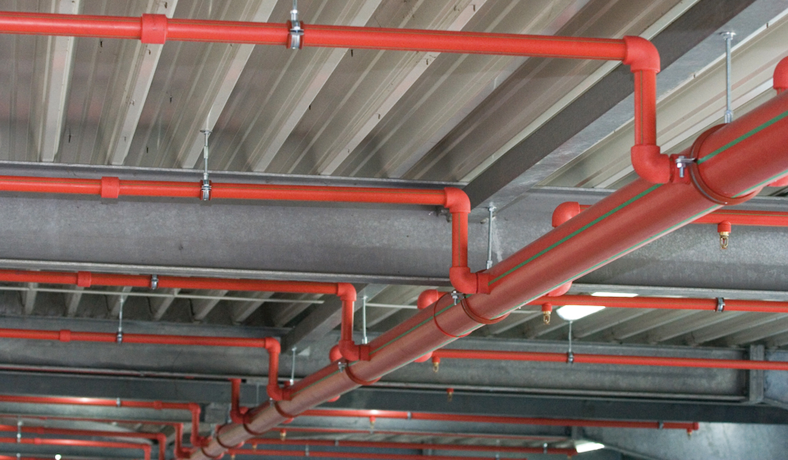

Servicios Integrales Y Llave En Mano En El Desarrollo De Sistemas Contra Incendio
Puebas preoperativas, operativas y de funcionamiento de sistemas de transferencia de liquidos, modelos y plantas piloto
ENERGÍA VAGA es un corporativo que Provee soluciones integrales y personalizadas en ingeniería, fabricación y pruebas operativas de sistemas contra incendio, transferencia de líquidos y plantas piloto, utilizando tecnología avanzada y automatización para garantizar la máxima eficiencia y calidad en cada proyecto. Todos los productos que suministra ENERGIA VAGA cuentan con las necesarias aprobaciones UL, FM, EN, LPC y/o VDS.
nos especializamos en plataformas costa fuera, realizando la implementacion de equipos contra incendio y tuberías de rapida acción para tener la mayor eficiencia en proteccion contra accidentes, con una acción rapida promedio de 25 segundos.
Las instalaciones de agua contra incendios son tuberías de instalación fija con dispositivos de cierre para la conexión de mangueras y diferentes sistemas de boquillas Estos sistemas son de vital importancia para garantizar la seguridad del edificio en el caso de incendio por lo que es imprescindible que en su instalación apostemos por materiales fiables y duraderos cumpliendo todos los requerimientos normativos sin olvidar las fundamentales tareas de mantenimiento de estos sistemas.
La calidad y la seguridad son fundamentales en todo lo que hacemos. Es por eso que nos adherimos a las más estrictas normas europeas y americanas. Esto no solo asegura la excelencia en nuestros productos y servicios, sino que también garantiza que cumplimos con las expectativas regulatorias y de seguridad en los mercados internacionales.
Nuestras normas